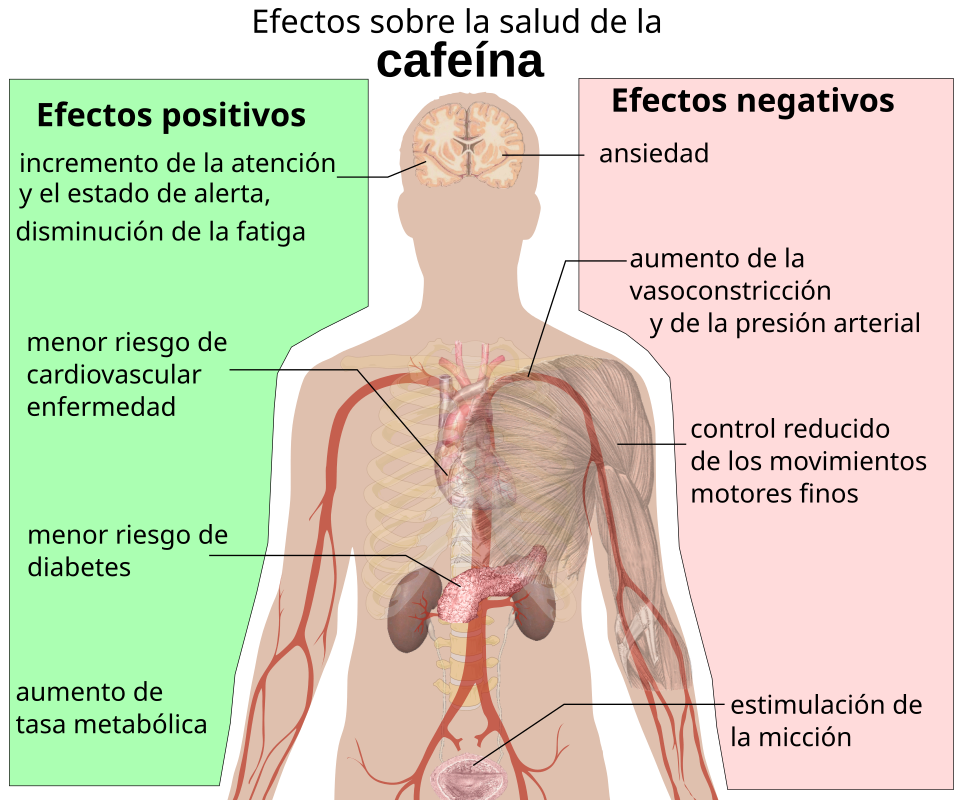

Il caffè è una bevanda che contiene tra i 40 e gli 80 mg di caffeina, una quantità che varia in base alla tipologia di caffè e al metodo di preparazione. La caffeina è una sostanza stimolante che agisce direttamente sul sistema nervoso centrale. In particolare, essa blocca i recettori A1 e A2A dell'adenosina, una molecola prodotta dal metabolismo energetico dei neuroni, i cui livelli extracellulari aumentano progressivamente durante la veglia. L'adenosina, in condizioni normali, rallenta l'attività neuronale legandosi ai suoi recettori, favorendo una sensazione di stanchezza. Visto che la caffeina possiede una struttura chimica simile a quella dell'adenosina, si lega agli stessi recettori, non attivandoli e impedendo il funzionamento normale dell'adenosina. Inoltre, la caffeina è anche in grado di influenzare indirettamente il rilascio e l'attività di alcuni neurotrasmettitori, come la dopamina e la noradrenalina. Di conseguenza, l'attività del sistema nervoso rimane elevata determinando un aumento dello stato di vigilanza e una temporanea riduzione della percezione della stanchezza.

La caffeina, una volta assorbita dall'organismo, è in grado di produrre diversi effetti sul sistema nervoso e sul corpo, sia positivi sia negativi. Gli effetti iniziano generalmente dopo circa 15-45 minuti dall'assunzione e raggiungono la massima concentrazione nel sangue dopo circa 30-120 minuti. La durata varia da persona a persona, in base a fattori come il metabolismo, l'età, le caratteristiche individuali e l'abitudine al consumo di caffeina.
Tra gli effetti positivi troviamo un aumento dello stato di attenzione, della concentrazione e della prontezza mentale, accompagnato da una temporanea riduzione della sonnolenza. La caffeina, inoltre, può stimolare temporaneamente il metabolismo, aumentando il dispendio energetico dell'organismo attraverso un processo chiamato termogenesi.
Diversi studi scientifici hanno inoltre evidenziato un'associazione tra il consumo abituale e moderato di caffè e un minore rischio di sviluppare il diabete mellito di tipo 2. Questo possibile effetto protettivo non dipende esclusivamente dalla caffeina, ma anche da altre sostanze presenti nel caffè, come gli acidi clorogenici, appartenenti alla famiglia dei polifenoli. Questi composti possiedono proprietà antiossidanti e possono contribuire a contrastare lo stress ossidativo e i processi infiammatori. Inoltre, potrebbero influenzare il metabolismo del glucosio, favorendo una migliore regolazione della glicemia e della sensibilità all'insulina. È importante precisare che questi meccanismi sono ancora oggetto di studio e che il consumo di caffè non garantisce la prevenzione del diabete.
Il consumo moderato di caffè è stato associato anche a un minore rischio di alcune patologie cardiovascolari. Tra le possibili spiegazioni vi sono gli effetti antiossidanti e antinfiammatori di alcuni suoi componenti, che potrebbero contribuire a proteggere le cellule dai danni provocati dai radicali liberi.
Tra gli effetti negativi troviamo, invece, insonnia, aumento temporaneo della pressione arteriosa (soprattutto nelle persone che non sono abituate ad assumere caffeina), maggiore produzione di urina, nervosismo, ansia, palpitazioni e aumento della frequenza cardiaca. Inoltre, il consumo abituale può portare allo sviluppo di una tolleranza, ovvero una progressiva diminuzione della risposta dell'organismo alla caffeina, rendendo meno intensi alcuni dei suoi effetti. Un'interruzione improvvisa del consumo può invece causare sintomi di astinenza, tra cui mal di testa, stanchezza, irritabilità e difficoltà di concentrazione.
Per beneficiare degli effetti della caffeina senza incorrere in conseguenze negative, è importante limitarne il consumo e prestare attenzione alla propria sensibilità. Per gli adulti sani, un'assunzione fino a 400 mg di caffeina al giorno è generalmente considerata sicura, mentre durante la gravidanza e l'allattamento il limite indicato dall'EFSA è di 200 mg al giorno. È inoltre consigliabile evitare il consumo nelle ore serali, poiché la caffeina può interferire con la qualità e la durata del sonno.
Per approfondire: